A day of talks on quantum computing, communication and sensing
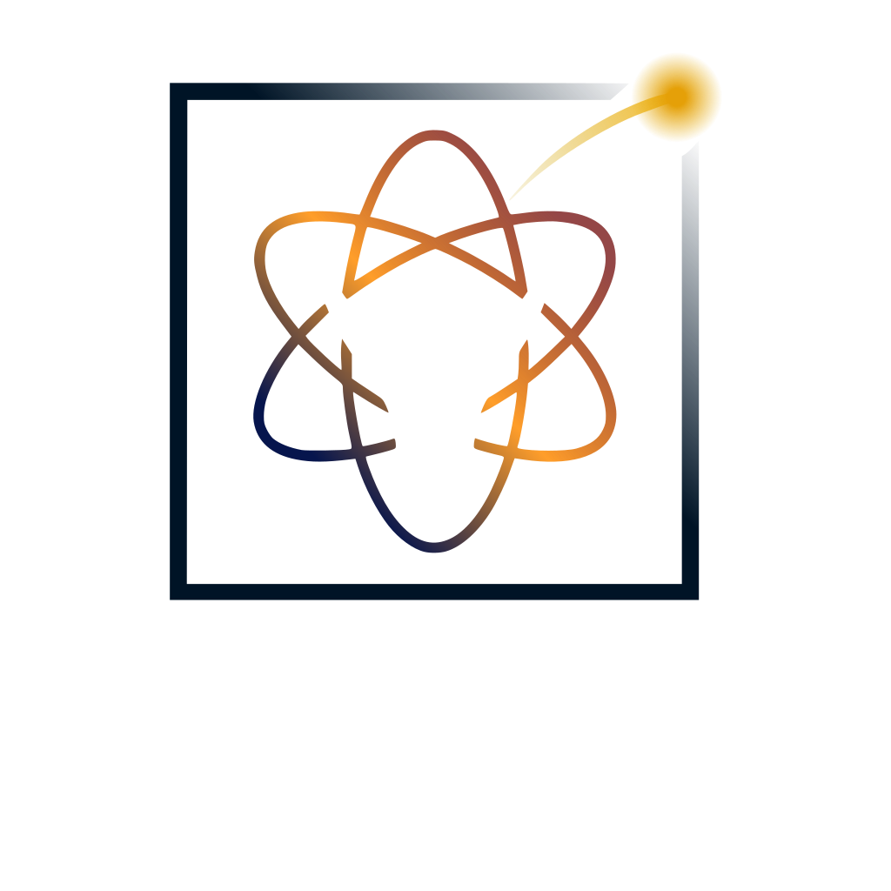
The BreaQ Conference is the day BreaQ moves on stage: researchers and industry experts on quantum computing, communication and sensing. It comes three weeks after the hackathon, and everyone is welcome, whether or not you hacked.
Researchers and industry experts on where quantum computing, communication and sensing stand, and where they are going.
Breaks to meet the speakers, fellow students and researchers, and the companies that support BreaQ.
Saturday 14 November, in Bucharest time. The times may still shift a little before the day.
Arrival and Coffee BreaQ1 hour
The organizing team Introducing the day and RoQTeam
Radu Ionicioiu IFIN-HH
Quantum technologies start to have an impact on our life. Here I will give a brief overview of “the second quantum revolution” and its future perspectives. I will focus on quantum communications and how to prevent the “quantum apocalypse”.
Mihai Neacșu Fsas Technologies, a Fujitsu company
Coffee BreaQ30 min
Javier Núñez-Bon ID Quantique; University of Geneva Online
Quantum key distribution (QKD) offers information-theoretically secure key exchange, but its large-scale deployment depends on integrating it into the optical fiber infrastructure that telecom operators already use, rather than dedicating separate fibers to it. The main challenge is coexistence: the extremely weak quantum signals must share the fiber with intense classical WDM channels, which generate noise through effects such as spontaneous Raman scattering and channel leakage. This talk reviews published progress on QKD integration into telecom networks, with a focus on O-band QKD operation and multiplexing strategies, as implemented in the Clavis XG platform. We discuss how the choice of wavelength and the multiplexing scheme affect noise, achievable distance and key rate, and what this means for practical deployments.
Laurențiu Dosan Quantum Optics Jena
At Quantum Optics Jena, we develop entanglement-based QKD systems by engineering the full chain from photon source to network. This talk connects highly nondegenerate entangled-photon sources—pairing 680 or 810 nm photons with 1550 nm telecom photons—with receiver characterization, dispersion compensation, and network design. Examples from deployed fiber links show how environmental changes, especially on aerial fibers, affect QKD operation. Together, these examples demonstrate how coordinated source, link, and network design shapes QKD performance over existing fiber infrastructure.
Lunch1 hour
Maria-Cătălina Ișfan Institute of Space Science, INFLPR; University of Bucharest
The Laser Interferometer Space Antenna (LISA) is expected to open a new observational window on the milli-Hertz gravitational wave Universe, where mergers of massive black hole binaries (MBHBs) will constitute some of the most important sources. Extracting these signals from noisy data streams in a timely and reliable manner represents a significant data analysis challenge, motivating the exploration of novel computational approaches. In this context, we investigate quantum machine learning (QML) tools, and in particular quantum neural networks (QNNs), as a potential component of future low-latency analysis pipelines for LISA. We take this approach using LISA Consortium datasets, training QNNs to distinguish gravitational wave signals embedded in instrumental noise from pure noise realizations.
We are currently evaluating the performance of these models on the Sangria LISA Data Challenge dataset and comparing their results with established classical machine learning methods. Our QNN achieves classification accuracies above 98% and successfully identifies 5 of the 6 MBHB merger events present in the Sangria blind dataset. The missed event corresponds to the source with the lowest signal-to-noise ratio, indicating that further improvements are required to enhance sensitivity to weaker signals. Despite using orders of magnitude fewer trainable parameters, the QNN delivers performance comparable to a recurrent neural network baseline on higher-SNR events. These findings demonstrate the feasibility of QML techniques for MBHB detection in LISA data and motivate further exploration of quantum-enhanced tools for future space-based gravitational-wave astronomy.
Ioan Valeriu Grossu Faculty of Physics, University of Bucharest
The main goal of this work was designing a single qubit neural quantum circuit for performing Exclusive-OR, a concrete example of an operation requiring multiple layers in classical neural networks. The corresponding Qiskit code was tested on both simulators and IBM’s “ibmqx2” five-qubit quantum processor. Further analyses along training the proposed neural quantum circuit are currently in progress.
Coffee BreaQ30 min
Filip Ceară Advanced Technologies Institute
We propose an alternative design for quantum-safe network architectures, based on distributing certified randomness generated by different trust-level QRNGs.
Our modular methodology aggregates high-trust entropy from upper network layers with local contributions, enhancing the security guarantees of locally available random sequences. Leveraging the physical guarantees of QRNGs and symmetric-key cryptographic algorithms for node authentication, our approach enables immediately deployable, quantum-safe infrastructures. Such a paradigm bypasses the practical security limitations of current QKD-based solutions, while avoiding massive key sizes and latency inherent to asymmetric PQC implementations.
Marian Zamfirescu
Ștefan Ataman ELI-NP
Quantum metrology is one of the pillars of the emergent quantum technologies and its main objective is the improvement of precision in measurement. Being able to harness quantum resources such as coherent superposition and quantum entanglement, it can potentially surpass the well-known classical bounds. In this presentation I overview some concepts and techniques from quantum metrology that cleverly use the uncertainty bounds in order to get a quantum advantage.
Hover or tap a portrait to reveal who is behind it and what they will talk about.
Senior Researcher (CS I) in Quantum Technologies, IFIN-HH
Talk · 10:10The dawn of quantum tech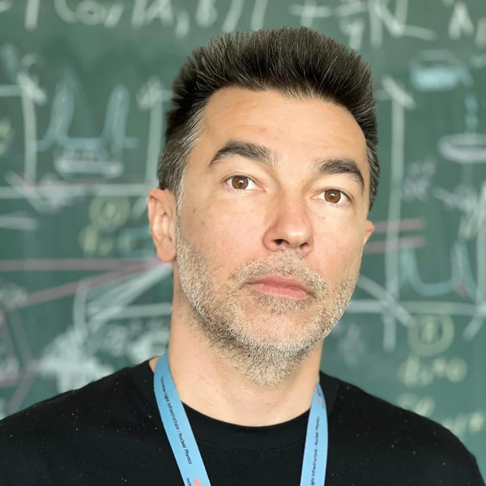
Senior Researcher (CS II), ELI-NP
Talk · 15:50Quantum metrology: taming uncertainty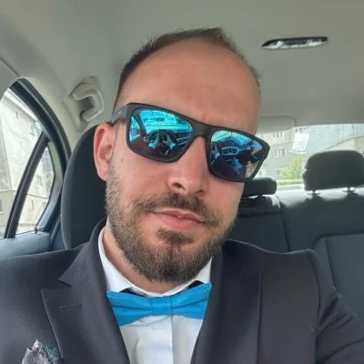
Quantum Optical System Engineer, Quantum Optics Jena; PhD student
Talk · 12:15Engineering entanglement-based QKD: from nondegenerate sources to deployed fiber networksR&D Scientist, ID Quantique; PhD candidate, University of Geneva
Talk · 11:50Bringing QKD to Telecom Fiber: O-band Coexistence with WDM Traffic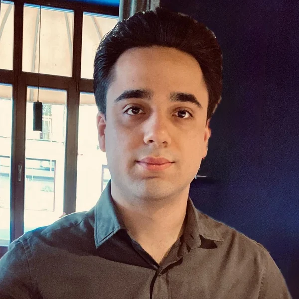
R&D Expert, Advanced Technologies Institute (ATI); PhD candidate, UNSTPB
Talk · 15:00Designing Quantum-Safe Network Architectures via Certified Randomness Distribution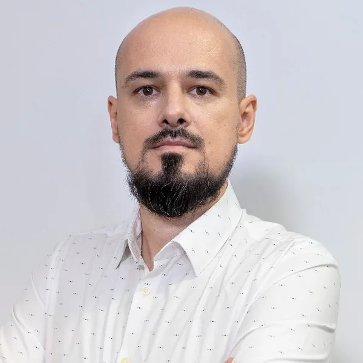
Quantum Evangelist, Fsas Technologies, a Fujitsu company
Talk · 11:00The Future of Advanced Computing: Preparing for the Quantum Era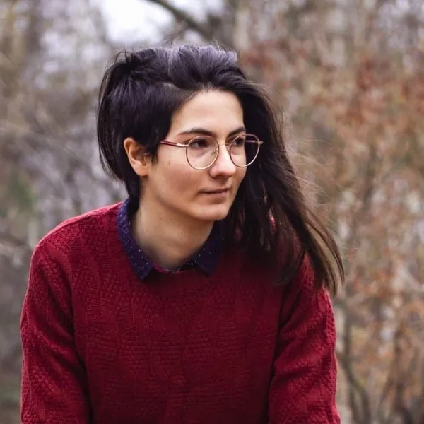
Research Assistant, Institute of Space Science, INFLPR; Doctoral School of Physics, University of Bucharest
Talk · 13:40Quantum Machine Learning Tools for Massive Black Holes Binaries in the Context of LISA Space MissionScientific Collaborator, Faculty of Physics, University of Bucharest
Talk · 14:05Single qubit neural quantum circuit for solving Exclusive-ORThirteen speakers took part in the first BreaQ, in November 2025, most of them on stage at the Military Technical Academy. A few of their talks:
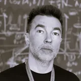
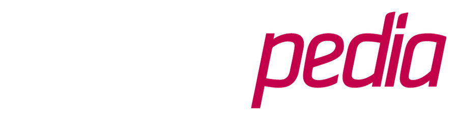
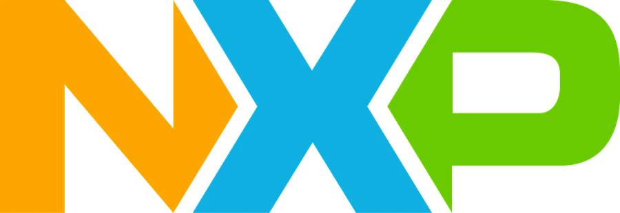
More sponsors are announced as they confirm. Want to support the conference? Write to us.
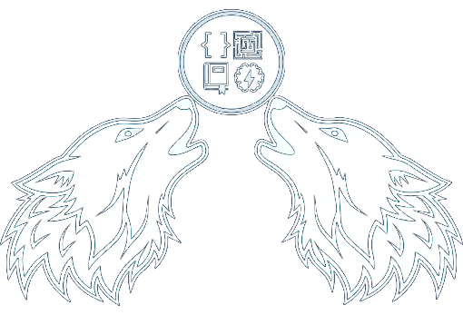
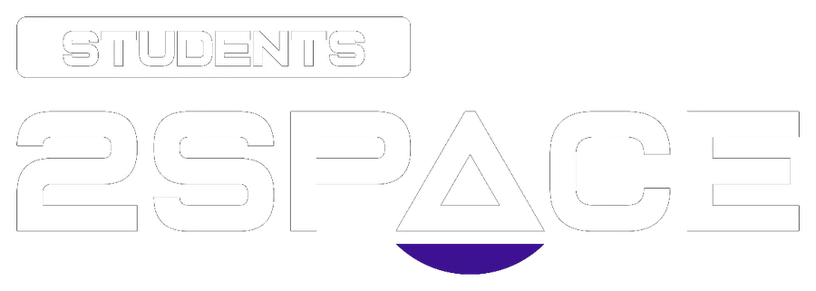
We thank the organizers of SecITC for supporting the BreaQ Conference.
Two days before BreaQ
Palace of the National Military Circle, Bucharest
The 19th International Conference on Information Technology and Communications Security. This year the BreaQ Conference is its associated event.
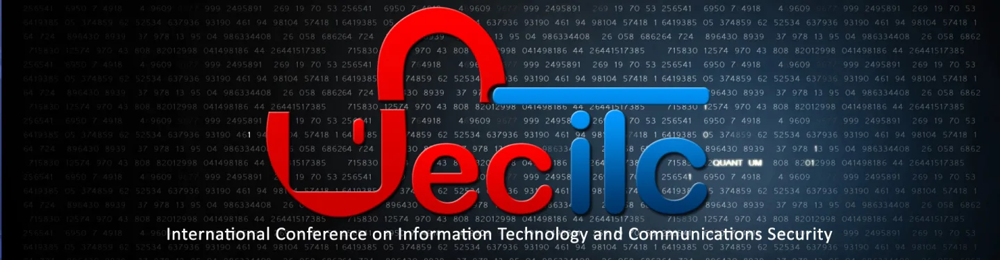
Saturday 14 November · Conference
Bulevardul George Coșbuc nr. 39-49, Sector 5, București, 050141
Everyone curious about quantum technologies. Students, researchers, people from industry and the simply curious are all welcome.
No. The conference and the hackathon are separate days, three weeks apart, each with its own registration.
It is free. Registration closed on 5 November; those registered get every practical detail by email. Think we can still fit you in? Write to us at registrations@roqteam.ro.
BreaQ runs in both Romanian and English.
Write to us at breaq2026@roqteam.ro with a title and a few lines about it.
BreaQ 2026 · Part one
Three weeks before the conference, teams take on real quantum challenges at the CAMPUS Research Institute, with mentors on the floor and prizes at the end.
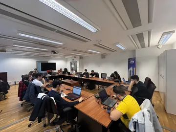
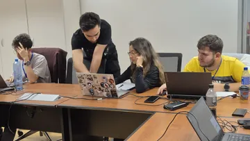
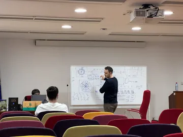
The hackathon floor in 2025. Every level is welcome, from complete beginners to researchers.
Registration closed on 5 November. Registered? Every practical detail reaches you by email.
Add to calendar